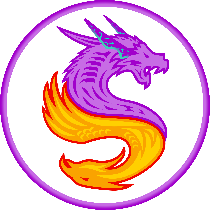

Pandæmonium · The Twelfth Circle (Savage) · Athena
Briefs
Settings
Show hints
Each step adds the rule it asks you to read: which chain lands first, where the tethers go, how the spread is ordered.
Automatically advance
When your answer is right, move straight to the next step instead of waiting for the continue button. The button at the end of a pull always stays.
Layout
Auto shows three columns on wide screens and two on narrower ones. Phones always stack.
Auto
3 columns
2 columns